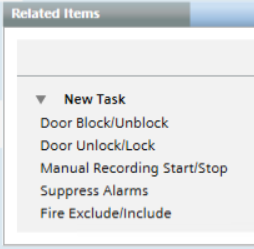
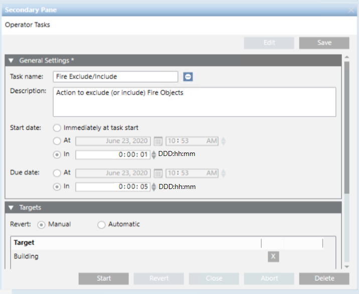

Setting Up Operator Tasks
This section provides instructions for creating or modifying operator tasks in Desigo CC. For instructions on how to execute and handle operator tasks, see Handling Operator Tasks.
Prerequisites
- You have Operator Task templates pre-loaded in the project.
- You have the application rights for Operator Tasks.
- You have appropriate user authorizations to work with the tasks and command their target objects.
- System Browser is in Application View.
Create a New Operator Task
This procedure covers the full creation of an operator task, starting from the type of action you want to perform, and then setting the target objects.
For an alternative quick method of creating an operator task, see Quickly Start an Operator Task on a Target.
- In System Browser, select Applications > Operator Tasks.
- The list of all the operator tasks displays in the Tasks tab.

- Click Add and, from the drop-down list, select the type of action you want to perform in this task.
For example,Door Unlock/LockorExclude/Include Fire Objects.
NOTE: The Maintenance task is available with the Maintenance extension. - The new task is added to the list.
- Open the General Settings expander.
For full details about these fields, see Tasks General Settings. - Modify the default Task name and Description.
The task name you enter must be unique. - Next to Start date, specify when you want the task to begin after the Start command is clicked:
- Immediately at task start: The task will start without any delay.
- At: The task will start at the specified date and time.
- In: The task will start after the specified delay has elapsed.
- Next to Due date, specify when you want the task to end:
- At: The task will end at the specified date and time.
- In: The task will end after the specified duration has elapsed.
- Open the Targets expander.
For full details about these fields, see Tasks Targets. - The Revert option indicates how the commanded objects are set back to their original values.
For example, fromUnlockedback toLocked, when the task ends.
- Automatic: when the due date is reached, the commands are automatically reverted.
- Manual: when the task commands are sent, a Revert command becomes available for the operator to click.
-No revert commands: the action performed by this type of task cannot be reverted. 
- If the task can be reverted, you can optionally switch between the Manual and Automatic settings.
- From System Browser, drag one or multiple objects into the Target field.
These must be objects of the appropriate type for the action performed by the task. - You can drop the same object more than once if it belongs to different views.
This is helpful with specific functions that must be applied only to certain view sublevels. - You can also remove associated target objects by clicking on the far right.
- The Parameters column becomes available if the commands of this tasks have editable parameter values:
- To change a parameter, select a value from the drop-down list or enter a numeric value.
- To reset a parameter to its original value, clear the field or click
 next to it.
next to it. - Select a Default check box to apply those parameter values to all other target objects of the same type.
For details about parameters, see Command Parameters. 
- Click Save.
Quickly Start a Task on a Target
From the Related Items tab, you can quickly create an operator task for the currently selected target object.
- System Manager is in a layout that includes the Contextual pane, and the Primary pane is unlocked
 .
.
- In System Browser:
a. Select the desired view.
b. Select the target object on which you want to execute the action. For example, Building. - In Related Items, under New Task, select the action you want to perform on this object. For example, Fire Exclude/Include.

- The task editing fields display in the Secondary pane. In the Targets expander, the target is automatically set based on the selected object. In this example, Building.
- In the Start date and Due date fields, set when you want the task to begin and end.
- (Optional) Edit the other task settings if required.
For details about these fields, see Tasks General Settings and Tasks Targets. - Click Save.

- The task is ready to be started. See Start an Operator Task.
Modify an Existing Operator Task
Depending on the task status, you can modify some settings of an existing operator task.
- In System Browser, select Applications > Operator Tasks.
- In the Tasks tab, select the task you want to modify.
- Click Edit.
- In the General Settings expander, the settings that cannot be modified appear dimmed. If the task status is:

Idle: You can modify any of the settings. See Tasks General Settings and Tasks Targets.
Failed: You can modify any of the settings except the Name.
Running,
Running with exceptionsor
Expired:You can only modify the Due date.- Click Save.
Adjust the Due Date of an Operator Task
You can change the due date to adjust when an operator task ends, to make it continue for longer or finish sooner than originally specified.
- The due date can be changed when the task status is:
- Idle
- Running(or Running with exceptions)
- Failed
- Expired
- In System Browser, select Applications > Operator Tasks.
- In the Tasks tab, select the task you want to modify.
- Click Edit.
- In the General Settings expander, next to Due date, modify date and time when you want the task to finish. For details about these fields, see Tasks General Settings.
- Click Save.
- If the Operator Tasks dialog box displays, enter your comment, and click OK.
- If the task status was
Expired, the task is automatically restarted.
Duplicate an Operator Task
Duplicating an existing operator task allows you to run it again. This makes it possible to repeat the same or a similar action, without configuring a new operator task from scratch.
- You can duplicate a task when its status is:
- Idle
-
Closed-
Closed for missing license
- In System Browser, select Applications > Operator Tasks.
- In the Tasks tab, select the task you want to duplicate.
- Click Duplicate.
- In the message box that displays:
- Click Yes to delete the original source task.
- Click No to keep the original source task.
- The duplicated task appears in the list. By default, its name is the same as the original source followed by # and its sequential number (for example,
myoperatortask#2). Its status is Idle, meaning it is available to be started. - (Optional) If you want to make adjustments to the task:
a. Click Edit.
b. Modify the settings as needed, for example, you can alter the Start Date and End Date, or change the name and description. For details, see Tasks General Settings and Tasks Targets.
c. When finished click Save.
Delete an Operator Task
Deleting a task removes it from the list in the Tasks tab.
- You can delete a task when its status is:
- Idle
- Closed-Closed for missing license
- In the Tasks tab, select the task you want to delete.
- Click Delete.